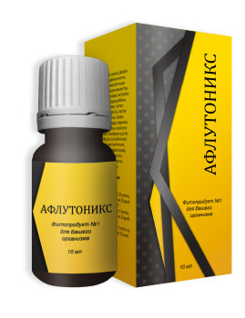

Сертификаты качества и лицензии
100% без слабительного эффекта и привыкания
7 869 положительных отзывов читать
Афлутоникс - абсолютное освобождение и обновление организма за 1 курс
Удаляет застарелые шлаки
из толстой кишки
из толстой кишки
Выводит тяжелые металлы, радионуклиды и токсичные остатки лекарств
Устраняет паразитов, которым вы позволяете процветать из‑за нездоровой
кишечной среды
кишечной среды
Обогащает кишечник натуральными
пребиотиками
пребиотиками
ПЛАТИНОВАЯ ЗАЩИТА С ГАРАНТИЕЙ 100% ВОЗВРАТА СРЕДСТВ

осталось 25 упаковок
Заказать Афлутоникс
до конца акции осталось:
03
:
27
:
48
ПО АКЦИИ
189 грн
Ваши данные под защитой
12 симптомов зашлакованного кишечника "от усталости до онкологии"
Экспресс диагностика
Отметьте справа симптомы которые вас беспокоят, затем нажмите кнопку результат.

Усталость, сонливость, забывчивость

Лишний вес, целлюлит, варикоз

Запоры, диарея, газы, ректальный зуд

Мигрени и повышенная тревожность

Аллергия и частые простуды

Хроническое заболевание

Мышечные и суставные боли, судороги

Неприятный запах пота и изо рта

Отеки, мешки под глазами, морщины

Плохие волосы, сальность, перхоть

Плохое кровоснабжение конечностей

Нестабильное давление, головокружения
ЗАШЛАКОВАННЫЙ КИШЕЧНИК — ЭТО НАПИСАНО У ВАС НА ЛИЦЕ
Ваши результаты
При третьей степени зашлакованности возможны аллергические реакции. Такие, как крапивница, сыпь на коже, а также бронхиальная астма и аллергический ринит. Все эти проявления связаны с тем, что шлаки и токсины не выводятся из организма и остаются в печени и почках.
Переход на 4-ую степень при отсутствии лечения: через 6 месяцев
Не допустите осложнений закажите Афлутоникс сейчас!
3 степень
ВЫ В ЗОНЕ РИСКА
Запущенный кишечник причина госпитализации более 5 000 000 украинцев в год
4 000 000 с зашлакованным кишечником уже смертельно больны!

КОЛОРЕКТАЛЬНАЯ ОПУХОЛЬ
Первые симптомы:
запорывздутие живота

КИШЕЧНАЯ ГРЫЖА
Первые симптомы:
боли в нижней части живота

СТОМА
Первые симптомы:
частые запоры
Откройте истинную природу ваших проблем
До тех пор пока ваш кишечник забит шлаками - вы никогда не почувствуете себя хорошо!

В среднем 35 летний человек носит в себе более 2500гр. вредных токсинов, металлов и соединений.

В изгибах кишечника скапливаются залежи
Ежедневно ваш зашлакованный кишечник выбрасывает новую порцию токсинов в лимфу. Происходит самоинтоксикация.
Кишечник забивается шлаками и каловыми камнями. Зашлакованный кишечник похож на старую канализационную трубу.
Вы стараетесь питаться правильно употреблять фрукты и овощи. Но это бессмысленно, пока кишечник забит шлаками! Из 100% полезных веществ усваивается только 0,5%. Оставшаяся часть пищи остается в кишечнике и гниет.
Кишечник забивается шлаками и каловыми камнями. Зашлакованный кишечник похож на старую канализационную трубу.
Вы стараетесь питаться правильно употреблять фрукты и овощи. Но это бессмысленно, пока кишечник забит шлаками! Из 100% полезных веществ усваивается только 0,5%. Оставшаяся часть пищи остается в кишечнике и гниет.
Зашлакованный кишечник не дает усваиваться полезным элементам здоровой пищи!

осталось 25 упаковок
«Предотвратите опасные заболевания сейчас! Закажите Афлутоникс!»
ПО АКЦИИ
189 грн
КИШЕЧНЫЙ ТЕРАКТ

Гниющие шлаки - рассадник патогенной микрофлоры, дрожжевых инфекций, таких как Candida albicans - идеальная почва для паразитов

При гниении белка в толстом кишечнике образуется метан. Всем известно, что метан - канцероген.

По мере накопления отходов увеличивается толщина кишки, что в 6,5 раз увеличивает вероятность её выпадения
БЕССМЫСЛЕННО ЛЕЧИТЬ БОЛЕЗНИ, ПОКА ВЫ НЕ ОЧИСТИТЕ КИШЕЧНИК!
Только детокс кишечника обеспечит исцеление всего организма
С вероятностью 75% вам не понадобится лекарства! Болезнь уйдет сама, потому что вы избавитесь от её главной причины.

ЕДИНСТВЕННО БЕЗОПАСНЫЙ И ЭФФЕКТИВНЫЙ СПОСОБ

осталось 25 упаковок
Удаляет все старые фекальные вещества и отходы из толстой кишки
Выводит тяжелые металлы и остатки лекарств, которые накопились на стенках кишечника за годы
Укрепляет мышцы толстой кишки, полностью нормализует стул без слабительного эффекта
Устраняет грыжи (дивертикулы) способствует снятию воспаления толстой и тонкой кишки
Изгоняет паразитов, которым вы позволили процветать из-за нездоровой кишечной среды
Обогащает кишечник пребиотиком Ацидофил - «дружественной» бактерией, которая восстановит каждый квадратный миллиметр тракта
ПО АКЦИИ
189 грн
Способ применения:

1 капсула 1 раз в день во время еды
Врачи 12 специализаций рекомендуют Афлутоникс
Дерматологи
Трихологи
Гастроэнтерологи
Фитнес-тренеры
Диетологи
Паразитологи
Аллергологи
Проктологи
Эндокринологи
Ревматологи
Гепатологи
Неврологи
Капилляры в толстой кишке начинают собирать токсины, яды
и вредные остатки лекарств. Вот начало интоксикации на физиологическом уровне. Если пропускать первые звоночки, ничего не предпринимать, все может кончится очень плохо.
Что могу вспомнить из недавнего по теме? Вскрытие женщины 55 лет показало застойную массу в толстой кишке равной 5 килограммам. Это не врачебный черный юмор, это жестокая правда.
Что могу вспомнить из недавнего по теме? Вскрытие женщины 55 лет показало застойную массу в толстой кишке равной 5 килограммам. Это не врачебный черный юмор, это жестокая правда.

Егоров Дмитрий Алексеевич
Хирург-проктолог, к.м.н.
Стаж практики 17 лет
Хирург-проктолог, к.м.н.
Стаж практики 17 лет

Тарапаев Евгений Викторович
Врач-гепатолог, проктолог
Стаж практики 27 лет
Врач-гепатолог, проктолог
Стаж практики 27 лет
Очищение организма от:
эндогенных токсинов – инфекционных агентов, а также экзогенных токсинов – опасных химикатов, находящихся в окружающей среде и проникающих в организм - это то, что необходимо сделать каждому человеку после 35 лет!
Я много лет занимаюсь колоноскопией и поверьте насмотрелся всякого! Не допускайте засорения вашего главного органа - кишечника.
Я много лет занимаюсь колоноскопией и поверьте насмотрелся всякого! Не допускайте засорения вашего главного органа - кишечника.
Мы привыкли думать, что погода на улице и постоянные нервные срывы являются виновниками болезней.
Нужно смотреть в корень проблемы. Кишечник - наше все! Это мозг, зрение, кровеносная система, лимфа, конечно печень, ЖКТ, легкие, иммунная и нервная система. Нездоровый кишечник провоцирует диабет, лишний вес, гипертонию, артриты. И конечно страдает микрофлора! В грязи могут водится только паразиты, там нет нормальной жизни. Принимайте меры!

Савельева Марина Александровна
Паразитолог, гастроэнтеролог. к.м.н., стаж практики 18 лет
Паразитолог, гастроэнтеролог. к.м.н., стаж практики 18 лет
В одной капсуле Афлутоникса

Экстракт расторопши
Улучшает функционирование печени, избавляет от загрязнения, выбросов, нитратной пищи. Очищает желчный пузырь, лимфу и протоки. Усиливает фильтрующую функцию клеток

Экстракт красной гвоздики
Растворяет застарелые фекальные отходы, впитывает и выводит из организма. Благодаря радиопротекторным свойствам выводит радионуклиды; Уменьшает уровень «плохого» холестерина; Понижает АД.

Экстракт золототысячника
Антигельминтное противовоспалительное. Показано при проблемах с кожей и волосами, нарушениях микрофлоры и гастрите; синусите и гайморите; авитаминозе; межреберной невралгии; болях в суставах и мышцах, кандидоза.

Экстракт тысячелистника
Предотвращает прикрепление к стенке кишечника вредных бактерий и тормозит их рост. Укрепляет слизистый слой кишечника для борьбы с инфекциями. Помогает сбросить вес.

Синтез 20 вспомогательных
компонентов
компонентов
Собирают гниющие фекальные отложения и мягко выводят из организма. Обладают желчегонным эффектом, снижают риск образования желчных камней; Снижают воспаления и боли в суставах.